使用 Quarto 建立部落格
Quarto 提供了靈活的文檔結構和編寫方式，可以輕鬆組織和管理您的部落格內容。它支援 Markdown 和 R Markdown，讓您能以簡單的語法撰寫文章並輕鬆地插入程式碼、圖片和數學符號。而且 Quarto 有美觀的主題和自定義樣式選項，讓您能根據個人喜好來設計和呈現部落格，包含引用 css 與 scss。對於當前 Quarto 結合了數據科學工具和數據可視化庫，如 R 和 Python，在這個資料科學與視覺化盛行的年代，能夠在部落格中輕鬆展示和分享數據分析、統計圖表和互動式可視化。然而，Quarto 的使用對於非技術背景的使用者可能具有一定的學習曲線，因為它需要一些基本的程式基礎和文檔編寫知識，以及對於 Markdown 或 R Markdown的理解。此外，部分進階功能可能需要更深入的技術理解和設定；但對於想要免費建立部落格的人來說，Quarto 確實比 Wordpress、Wix 等網站相對方便（對我就是免費仔才會學這個東西）。
因為 Quarto 算是一個很新的玩具，中文社群討論的內容少之又少，作為喜歡寫文章分享新東西的我就著手撰寫了這篇教學文，希望對於那些想要學習新東西、想要建立網站但又不想學 HTML、css 與 JavaScript 的人來說有很大的幫助！
以下的內容都是假設讀者的電腦裡面都有 R Studio 且已經熟悉 Markdown 語法，如果沒有的話請自行到 R Studio 官方網站下載，並到 HackMD 語法教學補齊相關知識。
下載 Quarto
我們首先進入 Quarto 官方網站，接著按下 Get Started 的按鈕後就進入下載介面了。
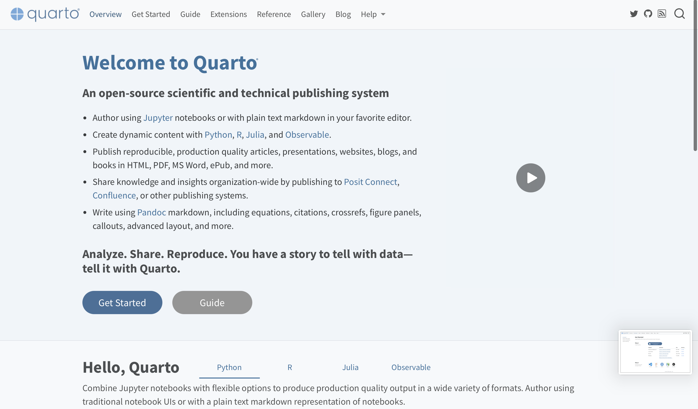
進入到下載頁面後，網站會自動偵測你使用的電腦系統是什麼，因此不用特別去尋找特定的版本（除非有特別需求）。
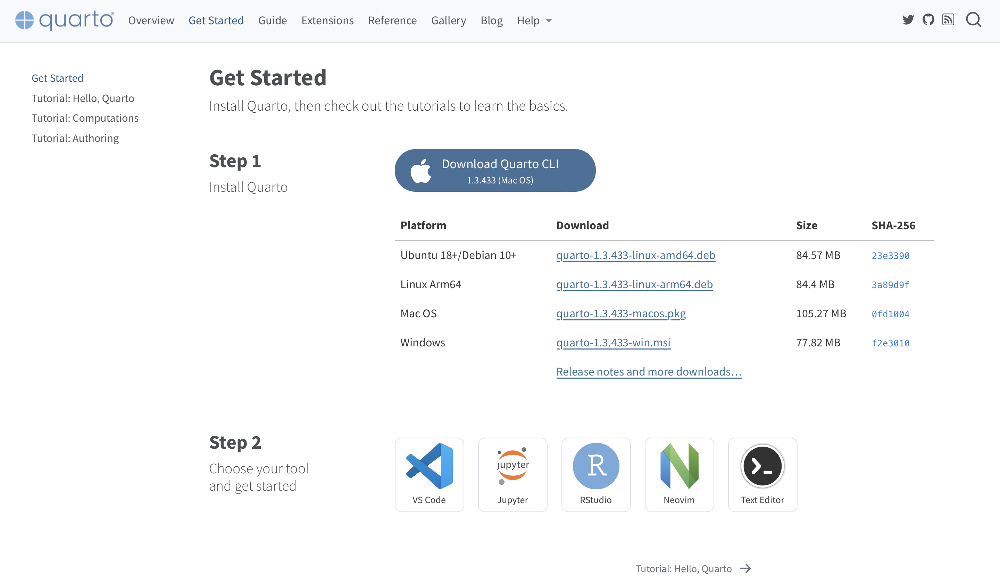 點擊下載後即可安裝。因為安裝步驟就是不斷地執行下一步，因此這邊就不贅述。
開始第一個 Quarto Blog 專案。
下載完畢後我們進入 R Studio，依照以下的方式建立專案：
或是觀看以下的影片：
建立完成之後我們就可以開始動一些手腳了。
專案檔案介紹與建立網站
我們可以在 R Studio 右下角的區域看到這個專案目前擁有的檔案。
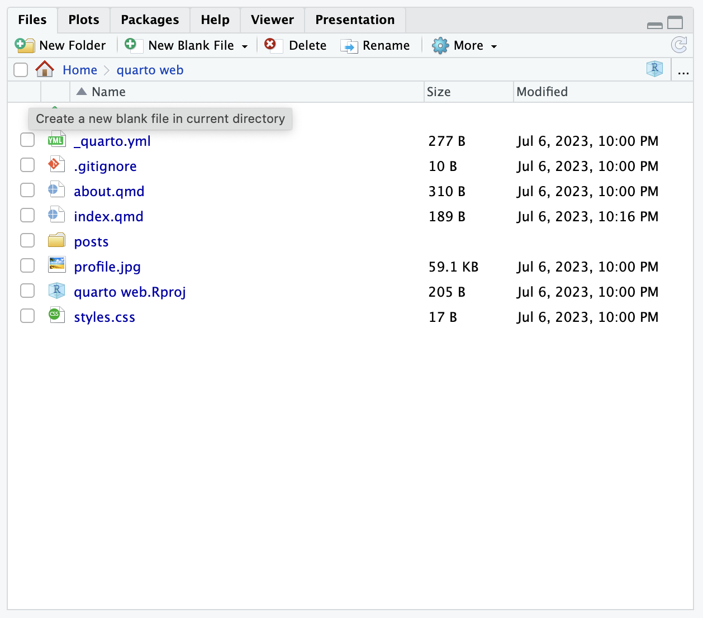
用樹狀圖呈現則是如下：
.
├── _quarto.yml
├── about.qmd
├── index.qmd
├── posts
│ ├── _metadata.yml
│ ├── post-with-code
│ │ ├── image.jpg
│ │ └── index.qmd
│ └── welcome
│ ├── index.qmd
│ └── thumbnail.jpg
├── profile.jpg
├── quarto web.Rproj
└── styles.css這些文件和目錄組成了 Quarto Blog 專案的結構，每個文件都具有特定的功能，包括配置、內容編寫、圖片存儲和自定義樣式設置等。通過編輯和管理這些文件，就可以建立一個功能完整且具有個性化的 Quarto 部落格。
_quarto.yml：這是 Quarto 專案的配置文件，其中包含配置和設置的metadata。它可以指定佈局、主題、樣式表等全局設置。about.qmd：這是一個Markdown文件，用於呈現有關部落格的關於頁面或描述性內容。您可以在此文件中編寫有關部落格的介紹、作者資訊等。index.qmd：這是部落格的首頁Markdown文件。它呈現部落格的首頁內容，可以包含部落格文章的列表、特色內容等。posts目錄：這個目錄包含部落格文章的子目錄，每個子目錄都對應一篇部落格文章。_metadata.yml：這是一個包含metadata的YAML文件，用於指定部落格文章的元資訊，如標題、日期、作者等。post-with-code目錄：這是一篇具有程式碼的部落格文章的子目錄。image.jpg：這是部落格文章中使用的圖片文件。index.qmd：這是Markdown文件，包含具有程式碼的部落格文章的內容。
welcome目錄：這是一篇歡迎部落格文章的子目錄。index.qmd：這是Markdown文件，包含歡迎部落格文章的內容。thumbnail.jpg：這是部落格文章的縮略圖或封面圖片。
profile.jpg：這是部落格的作者個人檔案圖片。quarto web.Rproj：這是 RStudio 專案文件，用於組織和管理 Quarto 部落格專案。styles.css：這是自訂的css樣式表，用於為部落格定制外觀和樣式。
下一個小節將會進行更進一步的設定教學，在此之前我們直接按下左上角的 Render Website：
沒有意外的話就會在你預設的瀏覽器跑出網站。注意到上面的網址是 http://localhost:6170/，代表 127.0.0.1 為表示「本電腦所保留的位址」，因此如果你很興奮地想要將結果分享給別人，別人是看不到的喔！
網站外觀設定
剛剛的網站渲染(rendering)過後的結果如下，我們可以將 Quarto 網站的外觀分成五個區域。
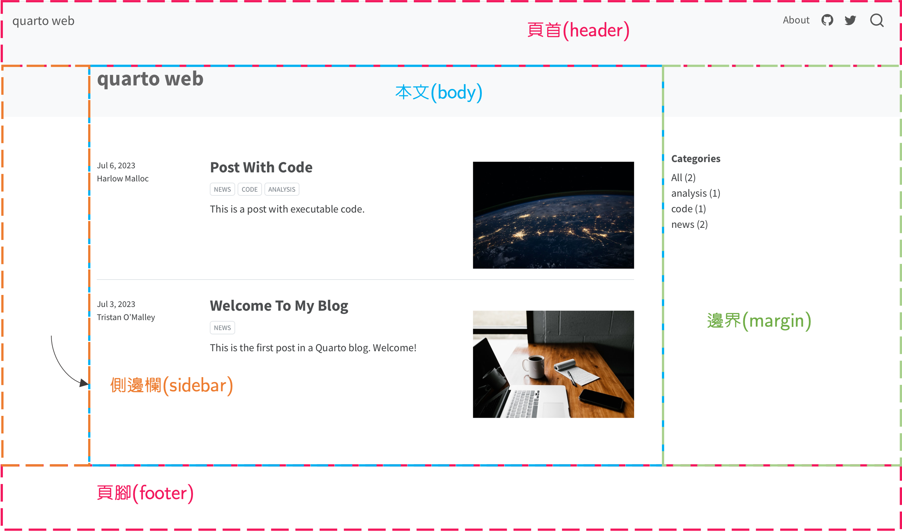
Quarto 網站通常由以下五個區域組成：
- 頁首（header）：頁首通常位於網站的頂部，其中包含網站的標題、圖示、網站導覽和其他重要的網站元素。
- 頁腳（footer）：頁腳通常位於網站的底部，其中包含頁面的版權信息、聯繫方式、社交媒體連結和其他頁面導覽鏈接。
- 本文（body）：本文區域包含網站的主要內容，例如文章。
- 側邊欄（sidebar）：側邊欄通常位於頁面的一側，提供額外的信息、導覽或其他相關內容。
- 邊界（margin）：邊界指的是網站內容和瀏覽器視窗之間的空白區域，用於提供網站元素之間的空間分隔，並幫助網站設計更加平衡和易於閱讀。
更改主題
Quarto 系統預設的主題是 cosmo，你可以到 Quarto 主題列表選擇適合你風格的主題。選擇完主題後打開 _quarto.yml，你會看到以下程式碼：
project:
type: website
website:
title: "quarto web"
navbar:
right:
- about.qmd
- icon: github
href: https://github.com/
- icon: twitter
href: https://twitter.com
format:
html:
theme: cosmo
css: styles.css
editor: visual接著在 theme 後面改上你想要的主題。比如我想將主題改為 lux，則要修改為：
format:
html:
theme: lux
css: styles.css按下 Render Website 或 Render 後即可得到更新後的結果。
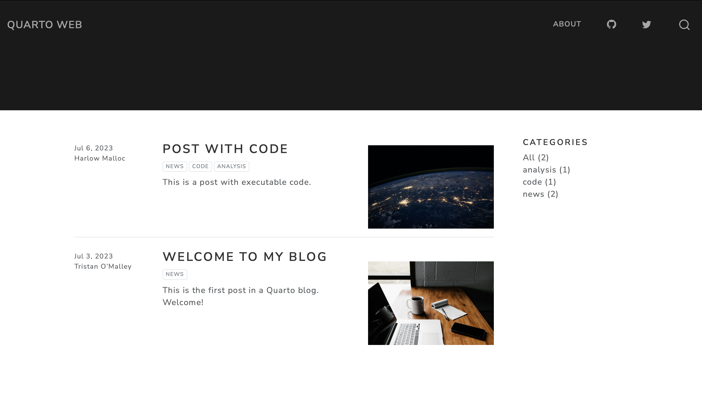
設定首頁
在 index.qmd 中我們會看到以下的程式碼：
---
title: "quarto web"
listing:
contents: posts
sort: "date desc"
type: default
categories: true
sort-ui: false
filter-ui: false
page-layout: full
title-block-banner: true
---該區塊的功能是對於網站配置進行設定，包含呈現什麼文字、如何排序文章、網頁名稱為何等資訊。
title: "quarto web"：這設定了網站的標題為 “quarto web”，這個標題會在網站的標題區域顯示。listing:：這個設定用於配置網站的列表(listing)功能。contents: posts：指定了列表的內容來自於名為 “posts” 的資料夾，用於顯示部落格文章列表。sort: "date desc"：指定了列表的排序方式為按照日期(date)的降序(desc)排序。這意味著部落格文章將按照日期的新舊順序顯示在列表中。type: default：指定了列表的類型為預設(default)。categories: true：啟用了顯示部落格文章的分類(categories)功能，分類不同類型的文章。sort-ui: false：禁用了列表的排序界面(sort-ui)，表示無法透過界面元素來更改排序文章方式。filter-ui: false：禁用了列表的篩選界面(filter-ui)，表示無法透過界面元素來進行篩選文章。
page-layout: full：指定了頁面的佈局為全寬度(full)，意味著網站的內容將佔據整個網頁可見區域的寬度。title-block-banner: true：啟用了標題區塊橫幅(title-block-banner)，這可能表示標題區塊將以橫幅的形式在頁面頂部顯示。
你可以依據自己的需求更改這些設定。更改設定完畢後，有兩個方式可以查看更新結果：
- 重新按下 Render Website 或 Render（最推薦）：按下後電腦就會重新渲染網站，並重新顯示網頁。
- 按下重新整理（不推薦）：按下儲存按鈕後回到網頁重新整理，即可看到更新後的內容。
注意到由於 Quarto 渲染的方式是將 .qmd 的內容製作成 .html 的檔案，並儲存到 _site 這個資料夾，如果你只是想要簡單看一下更新後的內容當然推薦第二個；但如果你已經準備要將網站內容推播到 github 等平台上，那麽建議使用第一個方式。
設定「關於」頁面
開啟 about.qmd 介面後，我們會看到以下內容：
---
title: "About"
image: profile.jpg
about:
template: jolla
links:
- icon: twitter
text: Twitter
href: https://twitter.com
- icon: linkedin
text: LinkedIn
href: https://linkedin.com
- icon: github
text: Github
href: https://github.com
---
About this blog設定大致上跟首頁一樣，而這邊新增了一些小東西。
首先是主題。如同首頁一樣，你可以自行設定主題，而「關於」頁面的主題請參考 Quarto About Page 主題。
再來是個人大頭照的部分，你可以上傳你的大頭照到資料夾中，如果你有特別想要修改檔名，記得在設定的地方改成以下的形式：
image: 你的檔名.副檔名接下來是個人連結，以下有幾點要說明：
icon：顯示在網頁上的圖示，但不是你隨便想用什麼圖案都可以，除非有特別設定，否則這些圖示都是根據 Bootstrap 5 icons裡面提供的圖示。text：你可以更改想要顯示在網頁上的文字，例如 github、facebook、instagram 等等。href：連結的部分要先確定該連結是可以訪問的，否則沒有辦法連結到網站。
這邊給一點小技巧，如果你已經用 Canvas、Word、\(\LaTeX\)、CakeResume等方式建立履歷表，並想要供讀者下載，你可以按照以下幾個步驟將履歷表置於網頁。
- 將檔案上傳到資料夾：基本上履歷表應該都是
.pdf的格式，除非有特別需求，否則直接上傳到父目錄即可。 - 新增圖示、文字、連結：在設定區域加入以下的程式碼即可完成設定：
...
links:
...
- icon: 圖示名稱
text: 顯示名稱
href: 檔名.pdf
...重新渲染後即可看到上述更新後內容。
新增文章
接下來要進到重頭戲：新增文章。文章是部落格的主體，或者是說部落格存在的目的就是向讀者分享你內心的想法、個人經驗、上課筆記等。
基本上文章儲存的地方在 posts 資料夾。Quarto 專案預設有兩篇文章，可以注意到他們都是將 .qmd 放在資料夾裡，這邊會特別註明是因為有時候文章會大量使用圖片、可供下載的數據集等，因此使用資料夾儲存每篇文章是最好的方式。
假設我們現在想要新增一篇文章，叫做「我的第一篇文章」。首先我們在 posts 資料夾新增子資料夾 first article，並在資料夾新增 index.qmd（如果你很懶可以直接複製預設的兩篇文章其中一篇）。接著我們在檔案中新增以下程式碼：
---
title: "Post With Code"
author: "Harlow Malloc"
date: "2023-07-06"
categories: [news, code, analysis]
image: "image.jpg"
---這邊有一些新的東西，我們一一介紹：
author：作者的名稱，必須以""包著。一篇文章的作者可能不只一個人，或是不同文章有不同的作者（如果網站的文章是由多人撰寫）。如果有很多作者，之間必須以半形逗號,隔開。date：撰寫文章的日期，你可以自行設定文章日期。categories：文章的分類。一個部落格可能有很多不同類型的文章，它將會顯示在 Margin 的區域
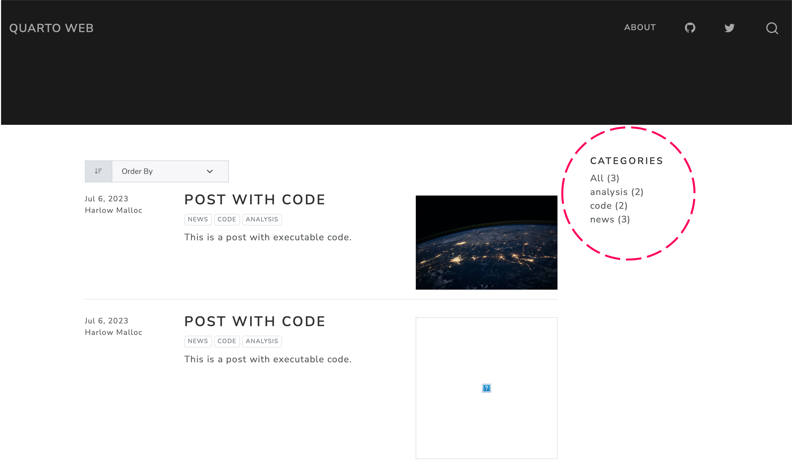
image：預覽圖片。這個圖片會顯示在文章列表中，可以先讓讀者看到你想要事先顯示的圖片。
個人化這些設定後，就可以開始用 Markdown 和 HTML 語法撰寫你的文章了！
值得一提的是，如果你想要在文章內顯示程式碼與輸出結果，可以按照以下步驟進行：
- 新增程式碼區塊(chunk)：我們可以點擊下圖圈選的區域，就會變成
R語言的區塊。
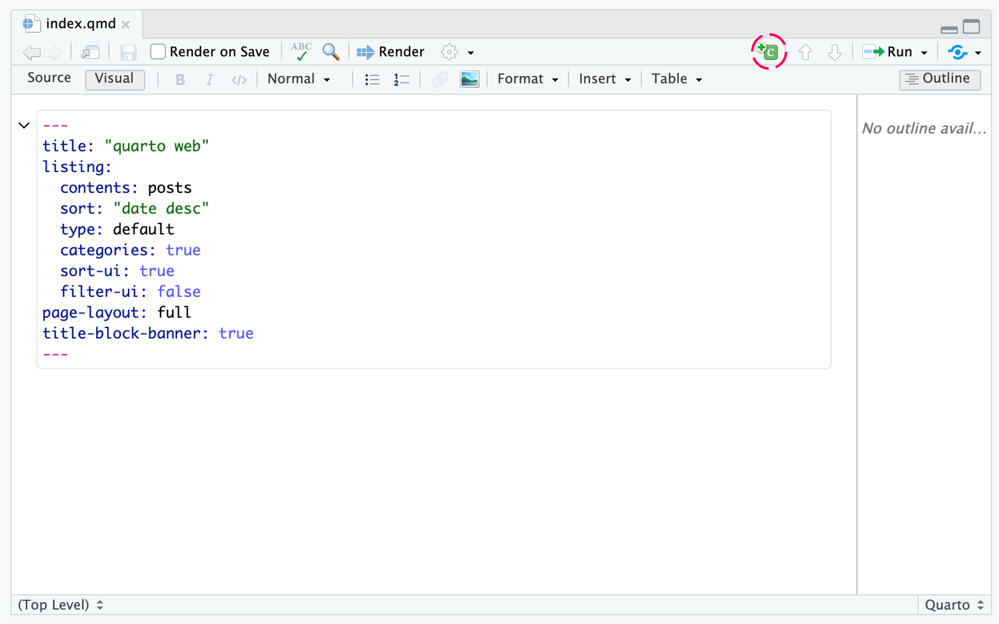
如果想要修改只要改掉程式語言的名稱即可，例如 python、cpp（c++）等。
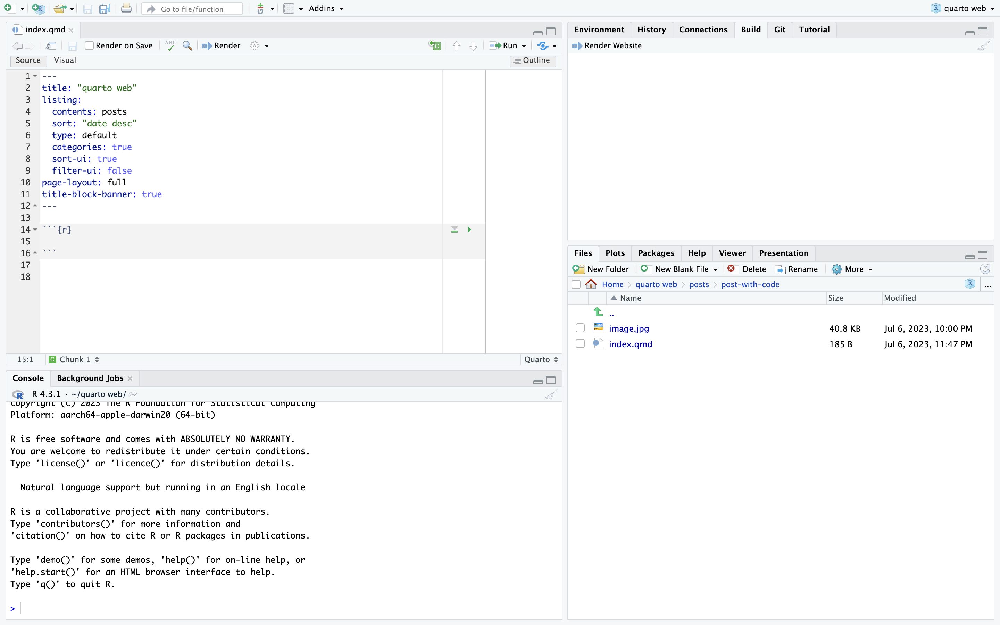
- 命名區塊：這個步驟不是很必要，但有時候程式碼有些問題經電腦報錯後，可以很快追蹤。命名的方式很簡單，只要在程式語言的名稱後面空格後加上名稱即可。例如：```
{r plot}。
發佈網站：github + Netlify
撰寫完文章後，便可以發佈到 github 等平台，以下我只會針對 github 平台的發佈作說明。
上傳到 github
首先我們要到 github 網站註冊 github。註冊完畢後我們在以下頁面點擊 New Repository：
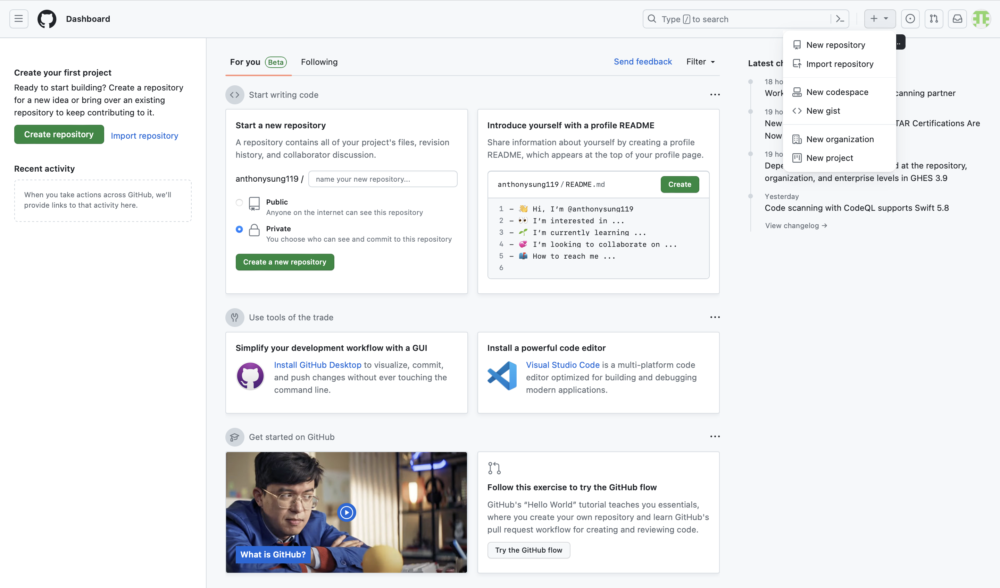
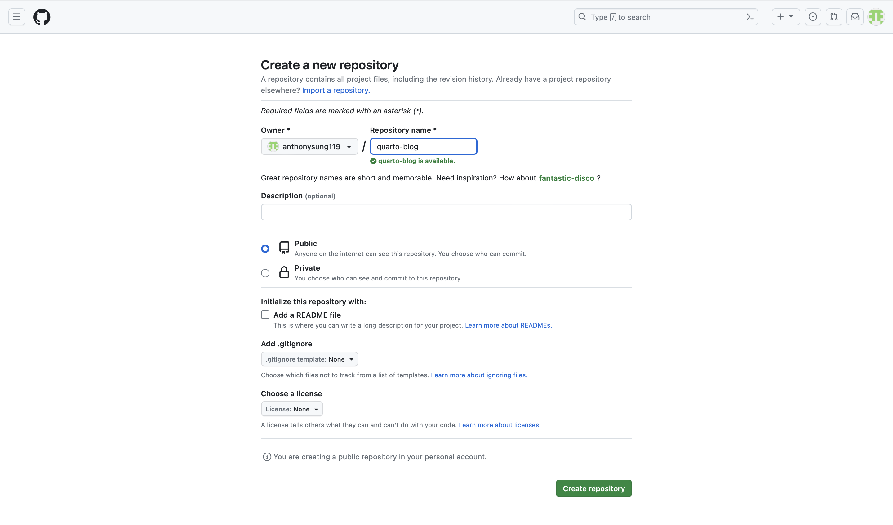
接著我們開啟終端機，然後進入 Quarto Blog 的資料夾。
cd quarto web接著初始化 git：
git init然後設定你要 git 上去的網址：
git remote set-url https://你的token@github.com/你的帳號名稱/你的 Repo 的名稱.git關於 token 的設定可以參考使用 GitHub Personal key 存取 GitHub Repository這篇文章。
然後依序執行以下指令即可：
git add .
git status
git commit -m "first commit"
git remote add origin https://你的token@github.com/anthonysung119/quarto-blog.git # 這行指令僅有在第一次設定時才要輸入
git branch -M main
git push -u origin main不出意外的你的 git repo 上面就會出現你的檔案了！
設定 Netlify 並發佈網站
我們進入 Netlify 官方網站註冊帳號。註冊完畢並認證信箱後，會看到以下畫面。
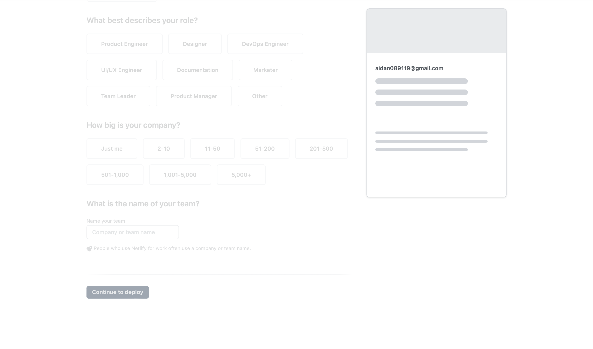
填完一些基本資訊後我們就可以與 github 連動。
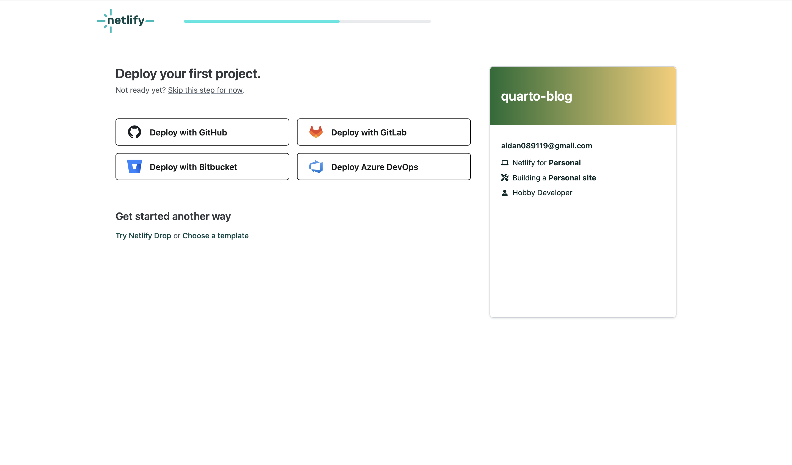
然後我們就會進入以下頁面：
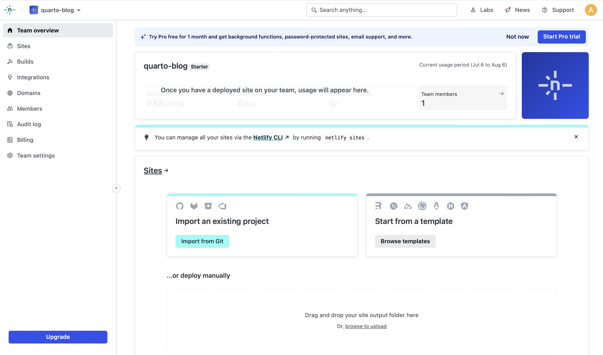
點擊 Import from Git，選擇你的專案後即可完成，系統就會自動構建並發佈網站。
小結
今天的教學就到這裡結束啦！希望這次的教學能夠幫助到有需要的人。如果想要看更多的模板，建議可以到 github 上面以 “quarto blog” 作為關鍵字搜尋，就可以找到更多好看的模板提供你做更改。
喜歡的話記得幫我按一下追蹤😍
Reuse
Citation
@online{sung2023,
author = {Sung, Anthony},
title = {使用 {Quarto} {建立部落格}},
date = {2023-07-06},
url = {https://yueswater-blog.netlify.app/posts/2023-07-06-r-blog-with-quarto-zh/},
langid = {en}
}